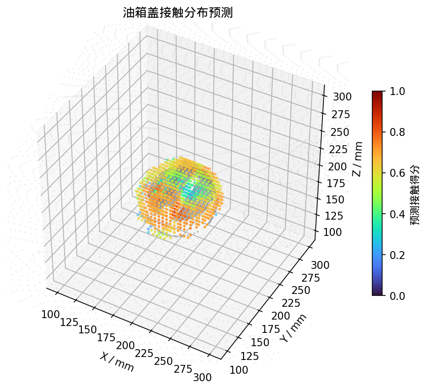
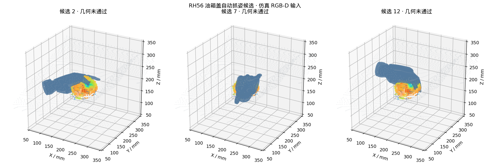
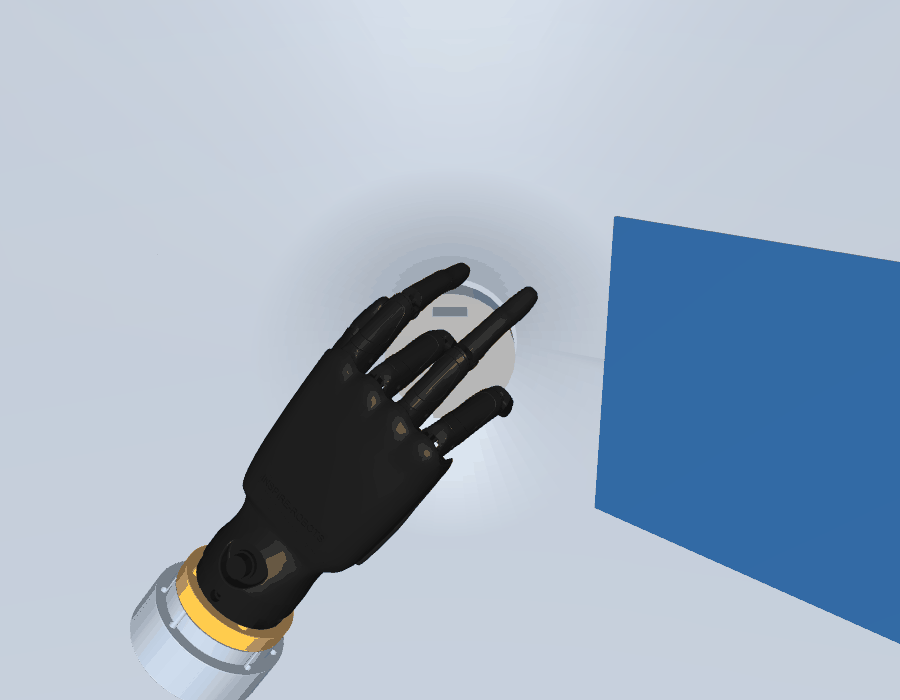

仿真 RGB-D · 人工整盖标注 · RH56 独立手
最新一轮生成 16 个满足关节范围和位姿数值条件的候选，几何筛选通过 0 个。当前候选存在盖体或周边环境干涉，尚不能作为有效抓取结果。
打开三维候选网页 · 查看三维接触预测 · 播放优化过程视频 · 结果说明
彩色点表示整盖邻域内的网络接触预测；分数用于候选生成。

每个候选均标注独立几何检查状态。

动画展示数值求解过程中的手姿变化，不是实际执行轨迹。
